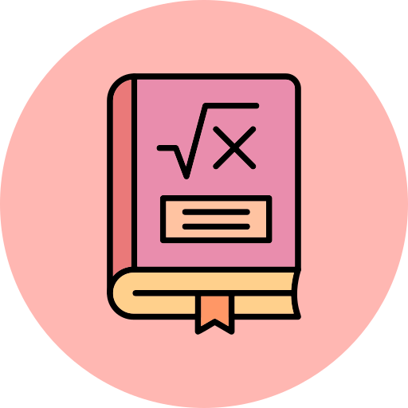

I am a positive-minded and motivated individual with a strong desire to succeed in everything I do. I work well both independently and in team settings, bringing a proactive and collaborative approach to every task. I have a strong interest in Cybersecurity, Data Science, and Game Development, and I’m eager to apply my skills and grow professionally in these fast-evolving fields.

Education
B.comp (Hons.) in Computer Science - University of Sri Jayewardenepura, Sri Lanka (Reading)
G.C.E. Advane Level Examination 2022 Wesley College
-  Combined Mathematics - B
 Physics - B
Physics - B- Information & Communication Technology - B
Skills
| Technical Skills | Non-Technical Skills |
|
|
 Java
Java JavaScript
JavaScript MySQL
MySQL Leadership
Leadership Project Management
Project Management Problem Solving
Problem Solving Analytical Skills
Analytical SkillsAchievements
Awards
- Zain Vilcassim memorial prize for the best University entrant in ICT
Certifications
- Introduction to JS - Sololearn
- Introduction to SQL - Sololearn
- Introduction to Java - Sololearn
- Introduction to Cybersecurity - Cisco
- Introduction to Data Science - Cisco
- Web Design for Begineers - University of Moratuwa
- Python for Beginners - University of Moratuwa
- CODEFUSE'24 hackathon certificate of participation - ACS
- IEEEXtreme 18.0 hackathon certificate of participation - IEEE
Extra-Curricular Activities
- Institute of Electrical and Electronic Engineers (IEEE)
- Avurudu with IEEE 2025 - Marketing team Head
- J'PURA EXPEDITION 2.0 - Logistics team member
- Standing Committee member - Logistics Committee 2024/2025
- Association of Computing students (ACS) - USJ
- Vice President 2025/2026
- TechXplore 1.0 - Coordinating & Finance Head
- Science Union of Wesley College (SUWC)
- Assistant Treasurer 2021/2022
- Erudita 2025 - Organizing Committee
- Crossroads 2025 - Organizing Committee
- Insurgence 2025 - Organizing Committee
- Buddhist Society (2014-2019)- Wesley College
- Under 13 Cricket Team (2014) - Wesley College
Projects
Ultrix Shoe Palace
Developed Ultrix Shoe Palace, a fully responsive e-commerce website using HTML and CSS, showcasing modern footwear trends and intuitive user interfaces.
This project demonstrates my front-end development skills and creativity in crafting engaging digital experiences.
Collaborative feedback from a peer enhanced code quality and user experience, reinforcing my problem-solving and teamwork abilities in a real-world development context.
Cost analysis case study on buying a vehicle
In this case study, my team and I conducted a detailed analysis of 8 vehicles for a fictional persona, comparing maintenance, operational, and service costs, as well as depreciation over the years. The goal was to recommend the most cost-effective vehicle based on total ownership costs for the intended years of use.
Technologies tools utilized include Excel (for data analysis), C++ (for application development), PowerPoint (for presentation).
Game development projects -
Snake Tic Tac Toe Ping Pong
Developed a series of interactive games in Java using the Swing framework to strengthen my object-oriented programming, GUI development, and event handling skills. Projects include a classic Snake Game with real-time collision detection and randomized apple generation, a 2-player Tic Tac Toe game with win detection and dynamic UI feedback, and a 2-player Pong Game featuring responsive paddle controls, collision physics, and real-time score tracking. Each game features a clean, intuitive interface and demonstrates efficient use of Java components such as KeyListener, Timer, and Graphics for rendering, input handling, and game loop logic. These projects reflect my ability to design engaging user experiences while applying core Java concepts in practical, functional applications.
Car cost analyzer 2.0
Built the 2.0 version of a vehicle cost analysis tool that I previously developed using C++. This time using HTML, CSS, and JavaScript. This tool allows users to compare the total ownership costs of a vehicle over a set period. My main goal of this project is to enhance my web development skills, specially JavaScript and apply it in a practical scenario while enhancing my previous application in a more user friendly way.